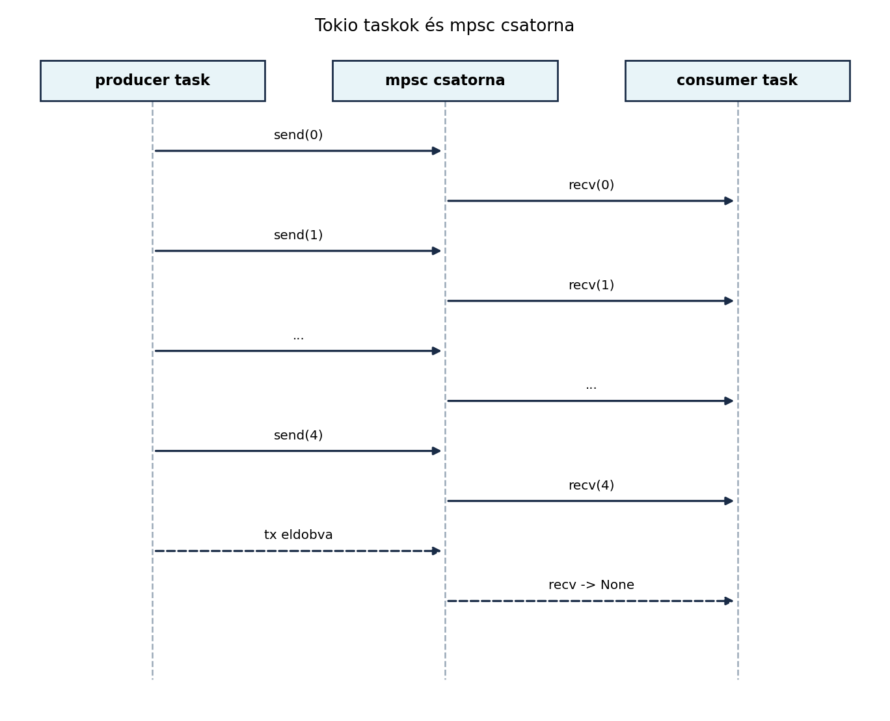

A C++-fejlesztő a párhuzamosságot leggyakrabban
std::thread, std::async és
std::future segítségével kezeli. A szálak azonban drágák:
minden szálhoz saját verem, kernel-ütemezés és gyakran rengeteg
szinkronizáció tartozik. Ha több ezer egyidejű kérést kell kiszolgálni,
a szálankénti blokkolás hamar skálázódási problémát okoz. A
std::async elindít egy feladatot, de nem tudja garantálni,
hogy az külön szálon, szálkészletben vagy éppen a hívó szálon fut-e; a
std::future pedig blokkoló .get()-et ad, nem
pedig valódi aszinkron kompozíciót. Az aszinkron I/O-hoz a C++-ban
könyvtárakra (Boost.Asio, libuv) vagy platformfüggő
epoll/io_uring kódra van szükség.
A Rust az aszinkronitást nyelvi szinten a
async/await párossal kezeli, de a
végrehajtáshoz szükség van egy runtime-ra. A tokio a
legelterjedtebb ilyen runtime, amely taskokra, aszinkron I/O-ra,
csatornákra és időzítőkre épít. Ez az alfejezet a tokio alapjait adja:
taskok indítását, csatornákat, select!-et, időkorlátokat és
a megszakítás-biztonságot. Ezt az alapot közvetlenül felhasználjuk az Az rkv hálózati szerver: TCP, protokoll, kecses
leállás alfejezetben, ahol a TCP-protokollt és a kecses leállást
valósítjuk meg, valamint a Naplózás és
megfigyelhetőség: tracing alfejezetben is.
#[tokio::main]Definíció. A runtime (futtatókörnyezet) az a komponens, amely az aszinkron feladatokat (future-öket) ütemezi és futtatja. A task egy olyan, a runtime által ütemezett future, amely önállóan futhat a többi taskkal párhuzamosan. A JoinHandle egy olyan fogantyú, amely a task befejeződését várja, és opcionálisan annak eredményét adja vissza.
A tokio runtime-ot legegyszerűbben a #[tokio::main]
attribútummal indíthatjuk el:
#[tokio::main]
async fn main() {
println!("Hello, async!");
}Ez az attribútum lényegében a következőre fordul:
fn main() {
tokio::runtime::Runtime::new()
.expect("hiba a runtime indításakor")
.block_on(async {
println!("Hello, async!");
});
}A #[tokio::main] alapértelmezetten
multi-threaded runtime-ot hoz létre, amely egy
szálkészleten futtatja a taskokat. Minden taskot a
tokio::spawn függvénnyel indíthatunk:
let handle = tokio::spawn(async {
// Task törzse
});A tokio::spawn megköveteli, hogy a taskban lévő future
Send + 'static legyen. A 'static megkötés
miatt a task nem tarthat referenciát például a hívó veremére; a
megosztott állapotot Arc-cal vagy csatornákkal kell átadni.
A Send megkötés garantálja, hogy a task biztonságosan
átkerülhet egy másik szálra. A tokio::spawn minden
runtime-on (current_thread esetén is) Send
future-t kér; nem Send future-t
tokio::task::spawn_local-lal, LocalSet-en
futtathatunk.
A JoinHandle-t await-elve megvárhatjuk a
task befejezését:
let handle = tokio::spawn(async { 42 });
let result = handle.await.unwrap(); // 42Itt az unwrap a task JoinError-ját kezeli,
amely akkor keletkezik, ha a task pánikba fulladt vagy megszakadt. A
Rust std::thread::JoinHandle analógiájára a tokio
JoinHandle is a task „csatlakoztatására” szolgál, de nem
blokkol, hanem egy future-t ad vissza.
A C++ std::async és a tokio spawn
alapvetően más modellt követ.
// C++: std::async feladat
#include <future>
#include <iostream>
int main() {
auto fut = std::async(std::launch::async, [] {
return 42;
});
std::cout << fut.get() << '\n';
}// Rust: tokio::spawn task
#[tokio::main]
async fn main() {
let handle = tokio::spawn(async {
42
});
let result = handle.await.expect("a task pánikba fulladt");
println!("{result}");
}A különbség: a C++ std::async viselkedése a
launch policytől függ. A
std::launch::async külön szálon indítja a feladatot (és a
visszaadott future destruktora vár a befejezésére); a
std::launch::deferred késleltetve, az első
get()/wait() hívó szálon futtatja; az
alapértelmezett policy (async | deferred)
implementációfüggő. A get() a hívó szálat blokkolja. A
tokio spawn azonnal ütemezi a taskot, és egy
JoinHandle-t ad vissza (ez maga is future); a task akkor is
lefut, ha a handle-t nem await-eljük, a runtime saját
ütemezője kezeli. A tokio::spawn
Send + 'static future-t követel, mert a task bármely
munkásszálra kerülhet; a tokio::task::spawn_local és a
LocalSet ezzel szemben !Send futurekhez való,
és ugyanazon a szálon futtat. A taskok száma nem feltétlenül egyezik a
szálak számával, mert a tokio work-stealing módon
osztja el a taskokat a szálkészleten.
A std::promise/std::future páros egyértelmű
Rust-megfelelője a oneshot csatorna, amelyet lentebb
tárgyalunk.
Szabály. Az aszinkron task ne tartsa sokáig
lefoglalva a runtime szálát .await pont nélkül. A gond a
hosszú vagy blokkoló munka (például
std::thread::sleep, std::fs::read,
std::net::TcpStream::read, zárra várás, nagy CPU-számítás):
ez az egész munkásszálat blokkolja, és megakadályozza a többi task
ütemezését. Ezt a munkát izoláljuk: a
tokio::task::spawn_blocking külön szálkészleten futtatja;
aszinkron I/O-ra a tokio::fs, tokio::net és
azok async metódusai valók. Ez nem a szinkron kód általános
tiltása: a rövid, nem blokkoló szinkron kód (egy sor értelmezése,
számolás) az async taskban is rendben van. Az rkv szerver
process_line függvénye is szinkron, de mivel a
FileStore fájlműveleteket végez (blokkolhat), a szerver
spawn_blocking-ben hívja.
Példa a helyes I/O-ra:
use tokio::fs;
async fn read_config() -> std::io::Result<String> {
fs::read_to_string("/etc/rkv/config.toml").await
}Ha CPU-köteles vagy blokkoló szinkron I/O-műveletet kell végezni,
használjunk spawn_blocking-et:
let result = tokio::task::spawn_blocking(|| {
// Blokkoló művelet, pl. std::fs::read
std::fs::read_to_string("/etc/rkv/config.toml")
})
.await
.expect("a blocking task pánikba fulladt")?;A spawn_blocking egy külön szálkészleten futtatja a
lezárt closure-t, így nem akadályozza az async feladatokat.
A tokio a következő async csatornákat nyújtja:
mpsc (multi-producer,
single-consumer): több küldő, egy fogadó. Ez a leggyakoribb
munkamegosztási eszköz.oneshot: egyetlen érték egyszeri
küldése. A C++ std::promise–std::future pár
megfelelője.broadcast: több fogadó, mindenki
ugyanazt az üzenetet kapja meg.Példa mpsc csatornára:
use tokio::sync::mpsc;
let (tx, mut rx) = mpsc::channel::<i32>(8);
tx.send(10).await?;
let value = rx.recv().await.unwrap();A csatornák alapértelmezetten bounded (korlátos)
csatornák, ami a C++ std::vector/std::queue
alapú saját implementációkhoz képest beépített
backpressure-t ad: ha a puffer megtelik, a
send future addig vár, amíg a fogadó fel nem szabadít
helyet. Az unbounded_channel korlátlan puffert ad, de ezt
ritkán érdemes használni, mert a termelő túlcsordulhat.
A oneshot csatorna a std::promise közvetlen
Rust-megfelelője:
use tokio::sync::oneshot;
let (tx, rx) = oneshot::channel::<String>();
tx.send(String::from("hello")).unwrap();
let value = rx.await.unwrap();A broadcast csatorna egyszerre több fogadónak juttatja
el az üzenetet:
use tokio::sync::broadcast;
let (tx, _rx) = broadcast::channel::<i32>(16);
let mut rx1 = tx.subscribe();
let mut rx2 = tx.subscribe();
tx.send(1).unwrap();
assert_eq!(rx1.recv().await.unwrap(), 1);
assert_eq!(rx2.recv().await.unwrap(), 1);select! és
timeoutA tokio::select! makró lehetővé teszi, hogy több
future-t versenyeztessünk: az elsőként befejeződő ág kiválasztódik, a
többi future automatikusan dropolódik (megszakad). Ez a POSIX
select/poll rendszerhívások async megfelelője,
a C++ szabványban erre nincs beépített megoldás.
A timeout függvény egy future-t és egy időkorlátot
kapcsol össze:
use tokio::time::{timeout, Duration};
async fn slow_work() -> String {
tokio::time::sleep(Duration::from_secs(5)).await;
String::from("kész")
}
#[tokio::main]
async fn main() {
let result = timeout(Duration::from_millis(100), slow_work()).await;
match result {
Ok(value) => println!("Időben kész: {value}"),
Err(_) => println!("Időkorlát lejárt."),
}
}A timeout tulajdonképpen egy select!-re
bontható:
tokio::select! {
value = slow_work() => {
println!("Időben kész: {value}");
}
_ = tokio::time::sleep(Duration::from_millis(100)) => {
println!("Időkorlát lejárt.");
}
}Ez a példa egyben bemutatja a select! szintaxisát is. A
select! képes a Future trait poll
mechanizmusára építve hatékonyan várni több future-re anélkül, hogy
szálanként blokkolnánk.
A select!-ben az egyes ágak teljes kifejezések, és
minden ágban egy jövőbeli (future) kifejezés szerepel, amelynek
eredményét mintázni lehet. A kiválasztott ág lefut, a többi ág future-je
megszakad (dropolódik).
Definíció. Egy aszinkron művelet
megszakításbiztos (cancel-safe) a tokio dokumentációja
értelmében, ha az .await ponton való eldobása (például egy
select! vesztes ágaként) után a dokumentált szerződése
szerint nem vész el adat, és a művelet újrapróbálható vagy folytatható.
Ez kétféle lehet: a művelet vagy teljesen elvégződött, vagy nincs
megfigyelhető hatása; vagy a részleges haladás dokumentáltan a hívónál
marad (például az AsyncBufReadExt::read_until a már
beolvasott bájtokat a hívó Vec-jében hagyja, és új híváskor
folytatható). Ez nem általános visszagörgetési
garancia. A megszakítás nem vonja vissza a future
korábbi mellékhatásait, és a megszakításbiztosság metódusonként
dokumentált tulajdonság, nem a select! adománya. Mindig a
konkrét metódus dokumentációjára támaszkodunk.
A tokio dokumentációja szerint például megszakításbiztos az
mpsc::Receiver::recv, a
broadcast::Receiver::recv, a oneshot::Receiver
await-je, a TcpListener::accept és az
AsyncReadExt::read; nem megszakításbiztos
az AsyncWriteExt::write_all (részlegesen írhat), az
AsyncReadExt::read_exact, a read_to_end és
minden olyan összetett async blokk, amely több egymást
követő mellékhatást hajt végre. Az mpsc::Sender::send
megszakításbiztos abban az értelemben, hogy megszakítás esetén az üzenet
nem lett elküldve, de az üzenet, amelyet a future
birtokolt, elvész (eldobódik).
A jellegzetes hiba tehát két alakban jelentkezik. (1) Az összetett blokk részleges sikere:
A részleges siker kontrolláltan előidézhető: a tx2
csatornát előre megtöltjük, így a második küldés Pending
lesz, és a timeout nyer. A blokkot
Ok::<(), SendError<i32>>(())-val zárjuk, hogy a
? típusa egyértelmű legyen (futtatható program, kimenete
alább):
Kódblokk — önálló példa · negatív viselkedési példa: lefordul, és megmutatja az első sikeres, második megszakított küldést
use tokio::sync::mpsc::{self, error::SendError};
use tokio::time::{sleep, Duration};
#[tokio::main]
async fn main() {
let (tx1, mut rx1) = mpsc::channel::<i32>(8);
let (tx2, mut rx2) = mpsc::channel::<i32>(1);
tx2.send(0).await.unwrap(); // a tx2 telített: a második küldés Pending lesz
tokio::select! {
r = async {
tx1.send(42).await?;
tx2.send(24).await?; // itt vár, amíg a timeout nem nyer
Ok::<(), SendError<i32>>(())
} => println!("kész: {r:?}"),
_ = sleep(Duration::from_millis(50)) => println!("időkorlát"),
}
println!("rx1: {:?}", rx1.try_recv()); // Ok(42): az első küldés megtörtént
println!("rx2: {:?}", rx2.recv().await); // Some(0): csak a régi elem
println!("rx2 tovább: {:?}", rx2.try_recv()); // Err(Empty): a 24 sosem érkezett meg
}Kimenet:
időkorlát
rx1: Ok(42)
rx2: Some(0)
rx2 tovább: Err(Empty)Az rx1 megkapta a 42-t, az rx2
viszont soha nem kapja meg a 24-et: a két csatorna állapota
eltér. Az alábbi ábra lépésenként mutatja, hol tart a két csatorna,
amikor a select! eldobja az async blokkot, és
hogy a (d) feladat megoldásának reserve-es változatában a
megszakítás után egyik érték sem vész el.
mpsc csatorna megtelik, a send vár, és a
timeout a vesztes future-rel együtt a küldendő értéket is
eldobja:let (tx, mut rx) = mpsc::channel::<String>(1);
tx.send("elso".into()).await.unwrap(); // a csatorna megtelt
let r = timeout(Duration::from_millis(30), tx.send("masodik".into())).await;
assert!(r.is_err()); // Elapsed
assert_eq!(rx.recv().await.as_deref(), Some("elso"));
assert!(rx.try_recv().is_err()); // a "masodik" elveszettA megoldás az, hogy a tulajdon a megszakítás után is a miénk marad.
Két mód van rá, mindkettő futtatható teszttel ellenőrzött. Mindkét
részlet előfeltétele egy telített csatorna: új
let (tx, _rx) = mpsc::channel::<String>(1); és egy el
nem fogadott elem (tx.send("elso".into()).await.unwrap();)
– az előző részlet rx.recv() hívása után a csatorna már
üres, a send_timeout ott sikerülne. A
send_timeout az értéket hibában visszaadja:
let err = tx.send_timeout("masodik".into(), Duration::from_millis(30)).await.unwrap_err();
match err {
mpsc::error::SendTimeoutError::Timeout(v) => assert_eq!(v, "masodik"), // megmaradt
other => panic!("{other:?}"),
}A reserve pedig először csak helyet foglal (egy
Permit-et), és az értéket csak a sikeres foglalás után,
szinkron küldi el; a foglalás megszakítása nem veszít adatot:
let value = String::from("masodik");
tokio::select! {
permit = tx.reserve() => { permit.unwrap().send(value); }
_ = sleep(Duration::from_millis(30)) => {
// timeout: a value továbbra is a miénk, újrapróbálható vagy naplózható
assert_eq!(value, "masodik");
}
}Külön eset a broadcast csatorna lassú
fogadója. A küldő soha nem blokkol; ha a fogadó lemarad, és a puffer
(kapacitás) megtelik, a legrégebbi üzenetek felülíródnak, a fogadó pedig
a következő recv-nél Err(RecvError::Lagged(n))
hibát kap, ahol n az elveszett üzenetek száma, majd
folytatja a megmaradtakkal:
let (tx, mut rx) = broadcast::channel::<i32>(2);
for i in 0..4 { tx.send(i).unwrap(); }
assert_eq!(rx.recv().await, Err(broadcast::error::RecvError::Lagged(2)));
assert_eq!(rx.recv().await, Ok(2));
assert_eq!(rx.recv().await, Ok(3));A megszakítás-biztonság a drop-alapú cancellation következménye. A
Rust async modellben nincs explicit cancellation API a future-re; a
future eldobása (drop) azonnal megszakítja a műveletet abban a
felfüggesztési pontban, ahol éppen áll: a future többé nem pollozódik, a
lokálisai eldobódnak. (A spawnolt task abort()-ja ezzel
szemben a task következő ütemezési pontján érvényesül.) Ez az egyszerű
és hatékony stratégia, de fegyelmet igényel a fejlesztőtől.
Négy különböző eset van, és mindegyik másképp viselkedik:
timeout lejár), az állapotgép
azonnal eldobódik, a művelet nem fut tovább. (Ez más, mint a spawnolt
task abort-ja: az együttműködő, a következő ütemezési
ponton lép érvénybe, és egy azonnal Ready
await nem feltétlenül ad vissza vezérlést.)tokio::spawn külön
taskot indít; a JoinHandle eldobása a taskot
leválasztja, nem állítja le. Egy
timeout(dur, handle) lejártakor tehát a task fut tovább.
Leállításhoz handle.abort() kell, ami a következő
.await pontnál lép érvénybe (és a handle.await
ekkor JoinError::is_cancelled() hibát ad).CancellationToken vagy
csatorna), akkor szabályosan, a saját rendezett lépéseivel áll le; ez az
rkv hálózati szerver kecses leállásának
alapja.spawn_blocking
closure-je, ha elindult, nem szakítható meg: az abort csak
azt akadályozza meg, hogy elinduljon.A különbség tesztelhető: egy 20 ms-onként számláló future-t 50 ms-os
timeout alatt közvetlenül futtatva a számláló a lejárat
után nem nő tovább (legfeljebb 3 növekedés), ugyanez a munka spawnolt
taskként, a JoinHandle-re tett timeout után
végigfut (5 növekedés), abort után pedig megáll.
Munkakönyvtár: ~/rust-labor/r039/
Ebben a laborban létrehozunk egy önálló kísérleti programot, amely
bemutatja a taskokat, az mpsc csatornát, a
select!-et és az időkorlátot. Az itteni ismereteket a
későbbi rkv-server laborban a szerver TCP-protokollja
hasznosítja.
Hozzuk létre a projektet és adjuk hozzá a tokio függőséget:
mkdir -p ~/rust-labor && cd ~/rust-labor && cargo new r039
cd r039A Cargo.toml tartalma:
[package]
name = "r039"
version = "0.1.0"
edition = "2024"
[dependencies]
tokio = { version = "1", features = ["full"] }Írjuk a src/main.rs-t. A consumer egyetlen,
teljes 1 másodperces határidőt kap a ciklus egészére: a
sleep future-t a ciklus előtt hozzuk létre és pineljük
(tokio::pin!), a select! pedig a
&mut deadline referenciát versenyezteti. (Ha a
sleep(...)-et a ciklusban, a select!-ben
írnánk, az minden iterációban újraindulna, így csak
inaktivitási időkorlátot adna, lásd alább.)
use std::time::Duration;
use tokio::sync::mpsc;
use tokio::time::{sleep, Instant};
#[tokio::main]
async fn main() {
let (tx, mut rx) = mpsc::channel::<u32>(8);
// Producer: 5 értéket küld 50 ms-onként, majd a tx eldobásával lezárja a csatornát.
let producer = tokio::spawn(async move {
for i in 0..5 {
tx.send(i).await.expect("a consumer él");
sleep(Duration::from_millis(50)).await;
}
println!("Producer: befejeztem.");
// `tx` itt kerül eldobásra -> a csatorna lezárul.
});
// Consumer: egyetlen, a ciklus egészére érvényes 1 s-os határidő.
let consumer = tokio::spawn(async move {
let deadline = sleep(Duration::from_secs(1));
tokio::pin!(deadline);
let start = Instant::now();
loop {
tokio::select! {
msg = rx.recv() => match msg {
Some(v) => println!("Consumer: fogadva: {v}"),
None => {
println!("Consumer: a csatorna lezárult, leállás.");
break;
}
},
_ = &mut deadline => {
println!("Consumer: a határidő lejárt ({:?}), leállás.", start.elapsed());
break;
}
}
}
});
producer.await.expect("a producer nem pánikolt");
consumer.await.expect("a consumer nem pánikolt");
}Futtassuk a programot:
cargo runVárt kimenet (futtatva, tokio 1.x; az időzítés miatt a
két utolsó sor sorrendje elvileg eltérhet, de a Producer a
csatorna lezárása előtt ír):
Consumer: fogadva: 0
Consumer: fogadva: 1
Consumer: fogadva: 2
Consumer: fogadva: 3
Consumer: fogadva: 4
Producer: befejeztem.
Consumer: a csatorna lezárult, leállás.A producer 5 értéket küld összesen 250 ms alatt, majd a taskja véget
ér, és a tx eldobása lezárja a csatornát. A consumer
rx.recv() hívása ekkor None-t ad, ami a ciklus
normál vége: a consumer azonnal leáll, nem vár
szükségtelenül további másodpercet. A határidő-ág
(&mut deadline) csak akkor nyer, ha a termelés a teljes
határidő alatt nem ér véget.
Teljes határidő és inaktivitási időkorlát. A két
fogalmat érdemes külön nevezni. A teljes határidő (deadline) a
ciklus összes futására vonatkozik: folyamatos termelés mellett is az 1.
másodpercnél leáll. Az inaktivitási időkorlát (idle timeout)
azt méri, mennyi ideig nem érkezett semmi; ezt kapjuk, ha a
sleep minden iterációban újraindul. A tesztek ezt mutatják:
egy 10 ms-onként termelő forrással a pinelt határidős consumer a 300
ms-os határidőnél áll le (290–450 ms közt), míg az iterációnként
újraindított 100 ms-os sleep a 400 ms-ig tartó termelést
végig kivárja, mert egyszer sem jár le.
Az alábbi idővonal a teszt adataival mutatja a különbséget: a pinelt
deadline egyszer jön létre, és abszolút időpontban (300 ms)
jár le, a ciklusban újra létrehozott sleep hátralévő ideje
viszont minden üzenetnél visszaugrik 100 ms-ra, így a termelés alatt nem
éri el a nullát; a 400 ms-os lezárás után a recv
None-t ad, ez a normál vége.
A következő ábra a taskok és a csatorna közötti üzenetváltást mutatja:

A producer task aszinkron módon küldi az értékeket, a consumer task
aszinkron módon fogadja őket. A határidő egy belső időzítő, amely a
consumer select!-ében versenyez a recv-vel; ha
a termelés tovább tartana az 1 másodpercnél, a határidő-ág nyerne, a
recv future megszakadna, és a consumer kilépne a
ciklusból.
Hosszú vagy blokkoló hívás async taskban. Ha
például std::thread::sleep-et vagy
std::fs::read-et hívunk async fn-ben, az
blokkolja a tokio runtime-szálát, és a többi task nem futhat. Az elv: a
hosszú vagy blokkoló munkát izoláljuk (spawn_blocking, vagy
az async megfelelő tokio::time::sleep,
tokio::fs), a rövid, nem blokkoló szinkron kód viszont
maradhat inline.
A select!-ben több mellékhatás. A
megszakítás-biztonság hiánya gyakori hiba. Ha egy
select!-ágban két egymást követő send hívás
van, a timeout megszakíthatja a műveletet az első send után, ami
részleges állapotot hagy. Tulajdonolt érték küldése telített csatornán
timeout alatt az értéket is elveszti. A megoldás: egyetlen,
dokumentáltan megszakításbiztos műveletet tegyünk az ágba (például
reserve, send_timeout), vagy a többlépéses
munkát állapotgéppel/külön taskkal végezzük, és a részleges siker
kezelését explicit megtervezzük.
Rc és nem-Send adatok a
taskban. A tokio::spawn
Send + 'static future-t igényel. Ha egy taskban
Rc-t vagy olyan referenciát használunk, amely nem
'static, fordítási hibát kapunk. Ilyenkor
Arc-ra kell váltani, vagy a data ownership-et csatornán
átadni. Ez a Rust szigorúságának egyik előnye: a hibát már fordítás
előtt elkapjuk.
Az await elfelejtése a
JoinHandle-n. Ha a JoinHandle-t nem
await-eljük, a task akkor is lefut, de a főprogram
kiléphet, mielőtt a task befejeződne. A tokio runtime a kilépéskor
leállítja a taskokat. A JoinHandle await-elése
biztosítja a kecses leállást.
Miért követeli meg a tokio::spawn, hogy a future
Send + 'static legyen? Miért nem elég a
'static, és miért okoz problémát, ha a future nem
Send a multi-threaded runtime-ban?
Írd át a következő C++ kódot idiomatikus Rust async kódra tokio-val:
#include <future>
#include <iostream>
#include <chrono>
#include <thread>
int main() {
auto fut1 = std::async(std::launch::async, [] {
std::this_thread::sleep_for(std::chrono::milliseconds(500));
return 1;
});
auto fut2 = std::async(std::launch::async, [] {
std::this_thread::sleep_for(std::chrono::milliseconds(300));
return 2;
});
// Az elsőként befejeződő eredményét írjuk ki.
// (Egyszerűen megvárjuk mindkettőt, de a válaszban használj select!-et.)
std::cout << fut1.get() << ' ' << fut2.get() << '\n';
}Írj egy select_timeout nevű async generikus függvényt,
amely egy future-t és egy Duration időkorlátot kap, és
Result<F::Output, TimeoutError> típust ad vissza,
ahol a TimeoutError saját hibatípus (a
tokio::time::error::Elapsed-nek nincs publikus
konstruktora). A függvény belül tokio::select!-et
használjon, ne a tokio::time::timeout-ot. Hasonlítsd össze
a viselkedést a beépített timeout-tal.
Az alábbi select! kód nem megszakításbiztos. Magyarázd
el, mi a baj, és javítsd ki úgy, hogy az időkorlát lejártakor se vesszen
el a küldendő érték, és a két csatornán ne maradjon kétértelmű részleges
állapot. Nevezd meg, mit nem ad a megoldás (például nem atomikus
tranzakció).
Kódblokk — részlet (egy
#[tokio::main] async fn main törzsébe illesztve) ·
negatív viselkedési példa: lefordul, de nem
megszakításbiztos
use tokio::sync::mpsc;
use tokio::time::{sleep, Duration};
let (tx1, rx1) = mpsc::channel::<i32>(8);
let (tx2, _rx2) = mpsc::channel::<i32>(8);
tokio::select! {
_ = async {
tx1.send(42).await?;
tx2.send(24).await?;
Ok::<(), mpsc::error::SendError<i32>>(())
} => { /* ... */ }
_ = sleep(Duration::from_secs(1)) => { /* timeout */ }
}A 'static megkötés azért szükséges, mert a task elvileg
tetszőleges ideig futhat, így minden benne lévő referenciának
érvényesnek kell lennie a task teljes élettartama alatt. A
'static nem azt jelenti, hogy az adat soha nem szabadul
fel, csak azt, hogy a hivatkozott adat nem függ a hívó veremétől. A
Send megkötés azért kell, mert a multi-threaded runtime a
taskot átmozgathatja egyik szálról a másikra; a Send
tulajdonság garantálja, hogy az adat biztonságosan átvihető szálak
között. Ha a future nem Send, és a runtime egy másik
munkásszálra költöztetné, a benne lévő nem szálbiztos állapot (például
egy Rc számlálója) két szálról is elérhetővé válhatna – ez
adatverseny; a Send bound ezt fordítási időben kizárja. A
tokio::spawn runtime-tól függetlenül
Send + 'static future-t kér; a nem Send future
megoldása a spawn_local és a LocalSet (csak
azon a szálon futó taskok), de ez ritkábban szükséges.
use tokio::time::{sleep, Duration};
#[tokio::main]
async fn main() {
let fut1 = async {
sleep(Duration::from_millis(500)).await;
1
};
let fut2 = async {
sleep(Duration::from_millis(300)).await;
2
};
let result = tokio::select! {
n1 = fut1 => n1,
n2 = fut2 => n2,
};
println!("Elsőként: {result}");
}A select! az elsőként befejeződő eredményt adja vissza,
a másik future megszakad. Ha mindkettőt meg akarjuk várni, használhatunk
tokio::join!-ot is.
use std::future::Future;
use tokio::time::{sleep, Duration};
/// Saját hibatípus: a tokio `Elapsed` értékének nincs publikus konstruktora,
/// ezért nem hozhatjuk létre magunk.
#[derive(Debug, PartialEq, Eq)]
pub struct TimeoutError;
pub async fn select_timeout<F>(fut: F, dur: Duration) -> Result<F::Output, TimeoutError>
where
F: Future,
{
tokio::select! {
output = fut => Ok(output),
_ = sleep(dur) => Err(TimeoutError),
}
}
#[tokio::main]
async fn main() {
let result = select_timeout(
async { sleep(Duration::from_millis(100)).await; 42 },
Duration::from_secs(1),
)
.await;
println!("{result:?}"); // Ok(42)
}A beépített timeout ugyanezt teszi, de
tokio::time::error::Elapsed hibát ad; ennek az értékét csak
a timeout állíthatja elő, ezért a saját függvény saját
hibatípust ad vissza (a másik lehetőség a feladat átfogalmazása a
publikus tokio::time::timeout használatára). Mindkét
változat a lejáratkor eldobja a future-t, tehát a lezáratlan tulajdonolt
értékek elvesznek (lásd a megszakítás-biztonság szakaszt). A fenti kód a
rögzített tokio 1.x verzióval fordul és fut, a viselkedést teszt
igazolja: sikeres befejezésre Ok(42), lassú future-re
Err(TimeoutError), ahogy a beépített timeout
is Err-t ad.
A probléma az, hogy a select!-ben az async
blokk két send hívást tartalmaz, és a timeout
ág bármikor megszakíthatja. Ha a timeout nyer az első send
után, a tx1-re elküldött érték már a csatornában van, a
tx2-re szánt érték viszont soha nem lesz elküldve; ráadásul
egy telített tx1 mellett a még el nem küldött
42 is elveszik. A fogadó rx1 értéket kap,
rx2 nem.
A javítás első lépése, hogy az érték a megszakítás után is a miénk
maradjon: reserve-vel előbb helyet foglalunk
mindkét csatornán (a foglalás megszakítása nem veszít adatot), és csak
ha mindkét Permit megvan, küldünk, szinkron módon,
megszakítási pont nélkül:
let (tx1, mut rx1) = mpsc::channel::<i32>(8);
let (tx2, mut rx2) = mpsc::channel::<i32>(8);
let sent = async {
let p1 = tx1.reserve().await.ok()?;
let p2 = tx2.reserve().await.ok()?;
p1.send(42); // innen nincs .await: a két küldés együtt, megszakítás nélkül megy végbe
p2.send(24);
Some(())
};
tokio::select! {
r = sent => println!("elküldve: {}", r.is_some()),
_ = sleep(Duration::from_secs(1)) => {
println!("Időkorlát: semmi nem lett elküldve, az értékek a miénk.");
}
}Ha az időkorlát a foglalás közben jár le, egyik érték sem lett
elküldve (a Permit-ek eldobása visszaadja a helyet); ha
mindkét foglalás sikerült, a két send egyetlen
.await-mentes szakaszban fut le. Ez nem atomikus
tranzakció a két csatorna között: ha a fogadó oldal leállt,
vagy a csatorna zárt (reserve hiba), a részleges siker
továbbra is kezelendő (itt: None, nincs küldés). Ha a két
küldést háttértaskba tennénk, az a megszakítás kérdését csak áthelyezné:
a JoinHandle eldobása a taskot nem állítja le, és a
shutdown is külön kezelendő (lásd az előző szakasz négy esetét).
A tokio runtime feladata a future-ök ütemezése. A
#[tokio::main] multi-threaded runtime-ot indít, a
tokio::spawn Send + 'static future-öket futtat
taskokként, és JoinHandle-t ad vissza. Az async I/O-hoz a
tokio::fs és tokio::net modulok async
függvényeit kell használni, blokkoló kódhoz pedig a
spawn_blocking-et. A tokio csatornák (mpsc,
oneshot, broadcast) async kommunikációt
biztosítanak; a mpsc bounded csatornája backpressure-t ad.
A select! makró több future-t versenyeztet, a
timeout pedig időkorlátot ad egy future-höz. A
kiválasztatlan ágak future-jei megszakadnak, ezért az ágak műveleteinek
dokumentáltan megszakításbiztosnak kell lenniük (recv,
reserve, send_timeout), a tulajdonolt értéket
pedig a megszakítás után is tartsuk meg. A JoinHandle
eldobása a taskot leválasztja, nem állítja le; az időzítő-ágat egy
pinelt sleep adja, ha teljes határidőre van szükség. Ezek
az ismeretek közvetlenül felhasználásra kerülnek az Az rkv hálózati szerver: TCP, protokoll, kecses
leállás alfejezet TCP-protokolljában és a Naplózás és megfigyelhetőség: tracing
alfejezetben.
tokio::select! makró és a megszakításbiztosság
(cancellation safety) metódusonkénti listája:
https://docs.rs/tokio/1/tokio/macro.select.htmltokio::sync::mpsc (reserve,
send_timeout) és tokio::sync::broadcast
(RecvError::Lagged):
https://docs.rs/tokio/1/tokio/sync/tokio::time::timeout és sleep:
https://docs.rs/tokio/1/tokio/time/A kódot a rögzített toolchainnel (Rust 1.99.1) és tokio 1.x
főverzióval ellenőriztük; a tokio::time::error::Elapsed
értéknek nincs publikus konstruktora, ezért a saját
select_timeout saját hibatípust használ.